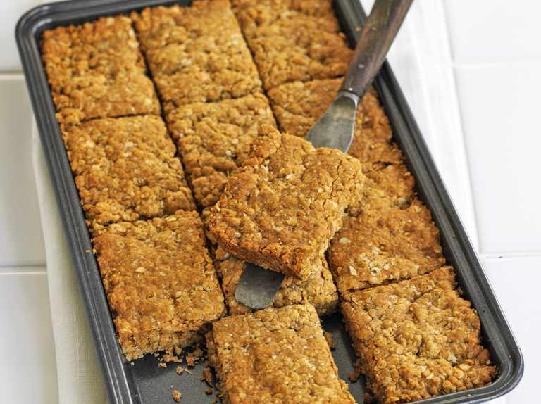

Golden Syrup Flapjacks

Chewy golden syrup flapjacks
Flapjacks are an ideal recipe to cook with the kids, or a quick treat to share with friends
Ingredients
- 250g jumbo porridge oats
- 125g butter
- 125g light brown sugar
- 2-3 tbsp golden syrup
Steps
- Head the oven to 200C
- Put the oats, butter, sugar and golden syrup in a food processor and pulse until mixed
- Lightly butter a 20 x 20cm baking tin and add the mixture. Press into the corners with the back of a spoon so the mixture is flat and score into 12 squares.
- Bake for around 15 mins until golden brown
Back to home